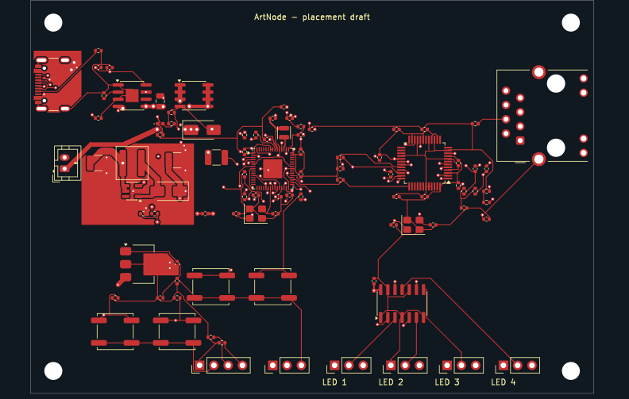

ArtNode got a fresh checkout and a new four-layer layout, keeping its 100 × 70 mm outline and connector placement anchors. The aim was a fully connected board with clean design-rule checks. The route now has zero KiCad violations and zero unconnected items. Getting there also meant correcting the circuit, rebuilding the power path, and finding a bug in our own fabrication checker.
This is a routed revision with engineering review still open. It has not been manufactured or tested on a bench. The distinction matters here: a checker can prove that copper connects the assigned nets and clears nearby objects; it cannot prove that the board will run cool, power a load safely, or carry Ethernet reliably.

The current candidate, showing top copper and silkscreen. Routing also uses the back and both inner copper layers. The board still carries a placement-draft label.
01 / The constraints we kept
The mechanical envelope stayed fixed. The original hardware files remain unchanged in the checkout; the re-drive lives in a separate layout directory. It keeps the connector set and placement anchors, with one necessary footprint replacement: the inherited USB4125 receptacle had no USB data contacts, so the new board uses a data-capable USB4105 footprint.
Despite the repository's 2040-artnode name, this revision uses an RP2354A controller, alongside a W5500 Ethernet interface and four buffered LED data outputs. Its source is Python: SKiDL generates the circuit and netlist, a JSON placement file locates the parts, and KiCad's pcbnew builds the board. This project does not use the TSX generator from our einhander rerouting experiment.
The circuit pass corrected the boost inductor and diode topology, charger indicator, crystal pad maps, W5500 supply and strap connections, and AHCT125 enable pins. SKiDL's electrical-rule check reports no errors or warnings. Netlist generation still emits missing-tag warnings; those are a separate report, and the exported pin connections and values were checked against the native board.
02 / One amp for testing changes the power design
The LED power requirement is 1 A total across all four outputs. That is for testing a small number of pixels. Larger installations will use their own LED supplies, sharing ground and data with the controller without tying the two 5 V supplies together.
Even that modest output requirement makes the battery-side current substantial. The boost stress model puts input current around 2.7 A at a 3 V battery when supplying a 1.3 A load at 5 V, including a controller allowance. That is a model result, not a measured operating point, but it is enough to reject the earlier 22 µH inductor and 1 A rectifier for this job.
The revision uses a 4.7 µH Coilcraft XAL5030 inductor, a 3 A rectifier, larger 47 µF input and output capacitors, and an inner-layer 5 V pour. The 3.3 V regulator is now a TLV1117LV33DCYR, specified for ceramic-capacitor stability, with copper on both sides and vias to spread heat. Effective capacitance under DC bias and actual regulator temperature still need verification.
We also added USB/battery load sharing. USB feeds SYS_IN through a diode; a PMOS selects the battery when USB is absent. The boost converter takes its input from that system rail, with local input capacitance, while the charger's battery output has its own filter. Twelve generic DC simulation cases exercise source selection. They do not qualify charger termination, transients, or the real components' thermal behavior.
The input limits remain an open design constraint. The retained battery connector is rated below the model's worst-case full-load input current. And USB-C pull-down resistors alone do not establish permission to draw 3 A from a source. Battery operating limits and USB source-current handling must be resolved before this board is ready to build.
03 / Routing and local finishing
Four layers gave us more routing room, but completing the board still took local finishing. The circuit-skills work adds FastRoute as an alternative to Freerouting, alongside the existing export, import and checking workflow. On this revision, USB power, MISO and several final escapes were finished locally after FastRoute. This was not a fully unattended autorouter result.
We revisited critical placement as well. On an earlier four-layer candidate, the RP2354 regulator's LX connection ran 5.52 mm and crossed two vias. Moving its inductor brought that connection down to about 2.23 mm, entirely on the front layer. That is a concrete improvement to the switch-node geometry; it is not a substitute for reviewing the regulator's whole layout against the hardware guide.
The viewer work belongs in the same loop. A fresh check report was appearing while an older side-panel board image remained cached, so the chat viewer and plugin tab could show different revisions. The live-update patch adds geometry refresh and routing progress while preserving the chosen layers and zoom. A previously opened viewer still needs the updated runtime and current board loaded; refreshing only the check results does not refresh copper.
04 / Seven hole-spacing errors came from our coordinate math
The fabrication checker reported vias colliding with connector holes that were not at those coordinates. It found seven actionable inter-part gaps below 0.5 mm, some negative, around the USB and Ethernet connectors. A negative gap is serious if the two holes really overlap.
Here, the helper had transformed rotated footprint pads with the wrong rotation sign. It placed the holes on the wrong side of the footprint before measuring their distance to nearby vias. Comparing those coordinates with KiCad's actual pad positions exposed the error. The fix uses KiCad's rotation convention consistently in the hole-spacing, floating-pad and keepout helpers.
With the corrected checker installed, the seven inter-part failures disappear. The two 0.340 mm gaps inside the USB connector's own footprint remain informational. That is a distinction between a component's hole pattern and a via placed too close to another part, not a blanket approval from a fabricator.
The router option, live-update work and coordinate correction are in the merged circuit-skills upstream patch. The reusable fix is in the checker; the board did not need seven arbitrary via moves to accommodate imaginary holes.
05 / The current routed candidate
| Check or measurement | Current revision |
|---|---|
| Board outline / copper layers | 100 × 70 mm / 4 |
| Footprints / nets | 96 (including 4 mounting holes) / 59 |
| KiCad violations | 0 |
| Unconnected items | 0 |
| Track length / segments | 2094.4 mm / 2032 |
| Vias / total drilled holes | 140 / 187 |
| Inter-part hole gap ≥ 0.5 mm | Pass, corrected checker |
| Via drill ≥ 0.3 mm / annular ring ≥ 0.13 mm | Pass |
| Surface-mount pads reached on their own layer or through a via | 290 / 290 |
The checks establish a connected, geometrically clean candidate under the configured rules. They also gave us a useful failure case for the tools: a clean native board can be falsely rejected by a coordinate bug, while a stale viewer can make a routed board look unrouted. Both the report and the image need to refer to the board being reviewed.
06 / What still needs engineering review
The next gate is the circuit's behavior in its physical layout. Crystal placement needs a proximity review. USB and Ethernet pairs need a routing, reference-plane and stackup review; tracks on the inner layers mean their use as reference planes cannot be assumed. The power path still needs a complete source-current budget, protected-battery limits, capacitor DC-bias checks and thermal verification.
We have a finished route, a repaired power path, and stricter tools that now agree about the geometry. We do not yet have a fabrication release. The original project is at pixeldestrukt/2040-artnode; the reusable routing and checking work lives in punkfab/circuit-skills. Have a board you want to take through the same process? Start a project →